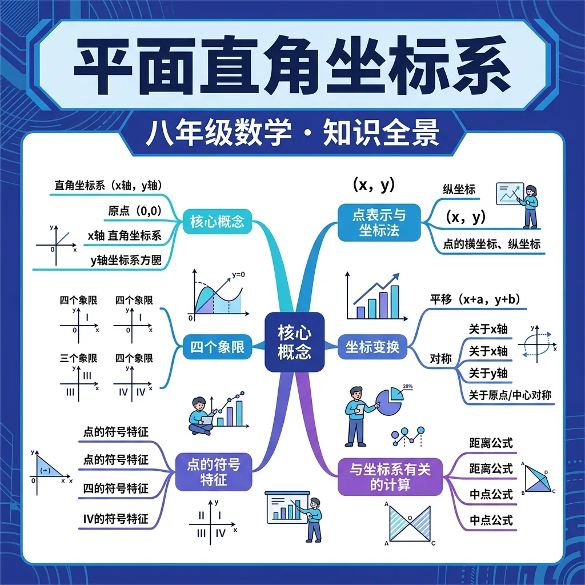
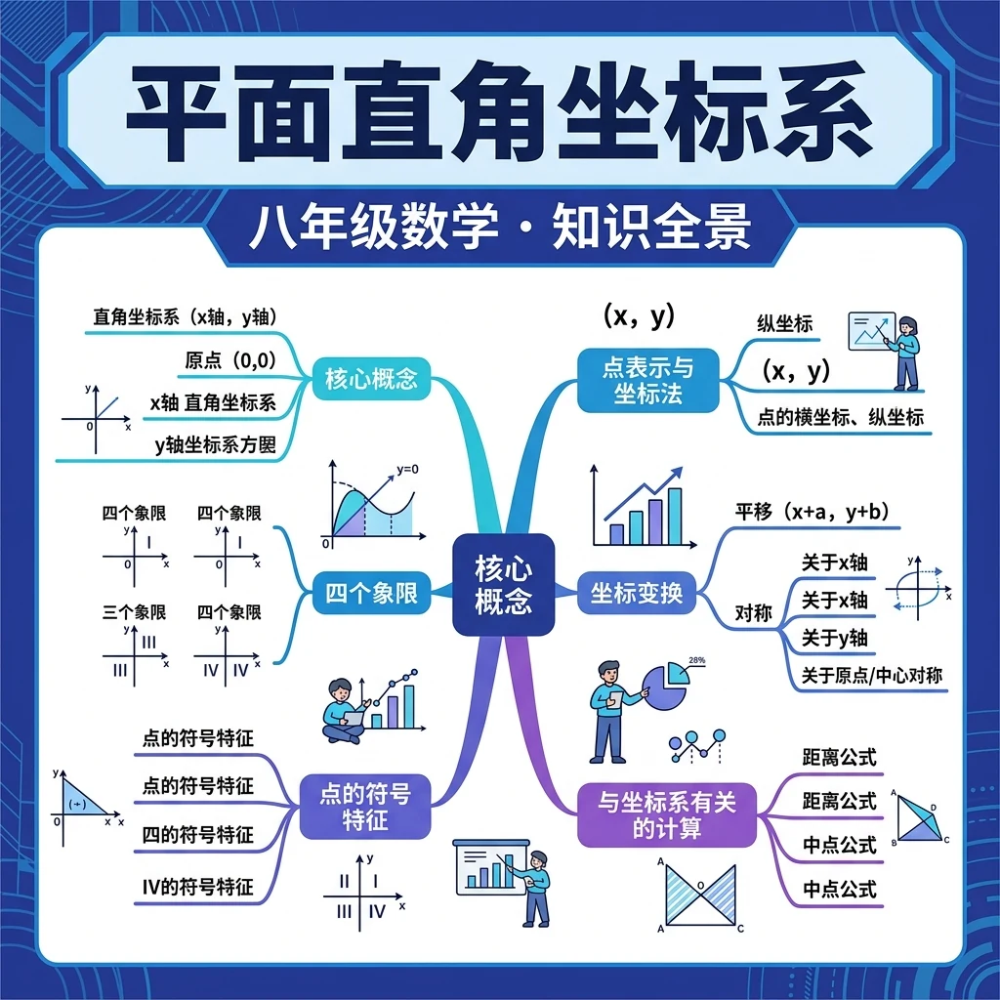
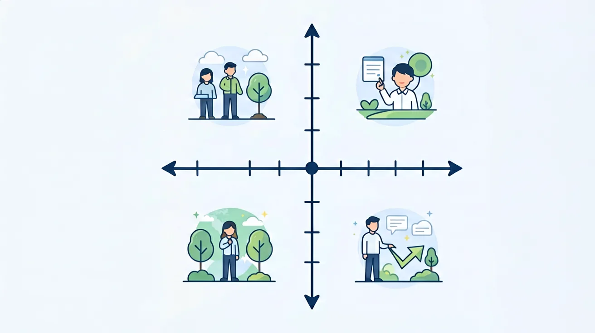

用数字精确描述任意位置——掌握坐标，掌握空间！

❓ 为什么坐标轴要画成十字形？
❓ 原点(0,0)为什么在正中间？
❓ 为什么x坐标要写在y坐标前面？
学完这一课，这些问题你都能自信地回答。
🎯 能说出平面直角坐标系三要素（原点、单位长度、方向）
🎯 能判断给定坐标所在的象限
🎯 能计算坐标系中两点间水平/垂直距离
And（背景）：小明在寻宝游戏中，地图说"从大树往东走5步，再往北走3步"。
But（冲突）：地图越来越复杂，"东南西北+步数"的描述让人晕头转向，还容易出错！
Therefore（转折）：数学家发明了平面直角坐标系——用有序数对 (x, y) 精确定位任意点！
在平面内建立两条互相垂直、有公共原点的数轴：
And：建筑师在坐标纸上设计了一栋楼在 (3, 4) 的位置。
But：要在河对岸（y轴另一侧）建一栋完全对称的楼，坐标该怎么写？
Therefore：学会坐标的对称规律，轻松解决镜像问题！
And：在《我的世界》等游戏中，每个方块都有精确的位置。
But：游戏世界无限大，玩家如何找到自己的家或宝藏？
Therefore：游戏用坐标系！按F3可以看到自己的 (x, y, z) 坐标——这就是数学的力量！
多边形顶点的坐标确定图形的形状和位置。
矩形 A(1,1) B(4,1) C(4,3) D(1,3)
🏙️ 以学校为原点建立坐标系，每格代表100米，完成坐标规划：
先独立作答，再点选项查看对错与错因。
若健身区位于第二象限，儿童区在第四象限，则两区位置关系是
坐标为(-20,30)的喷泉要移到(40,-10)，应如何移动
休息区边界经过(0,20)和(30,0)，该区域形状是
绿化区顶点坐标为(____,____)、(30,40)、(-10,40)，则第一个顶点坐标是
答案：-10,0
根据矩形特征，y坐标应为0与40对应
若将坐标系单位长度缩小为原来的1/10，点(50,-30)在新坐标系中变为(____,____)
答案：5,-3
坐标值按比例缩小10倍
关于坐标系原点O的描述正确的是
根据游客分布数据点(15,25)、(-20,10)、(30,-5)，确定垃圾桶设置点
坐标系由x轴（横）和y轴（纵）两条数轴垂直相交构成
用有序数对表示点的位置，第一个数对应x轴，第二个数对应y轴
类似棋盘定位，但坐标系有正负方向且刻度均匀
想象城市地图：东西走向是x轴，南北走向是y轴
GPS定位、电影院座位号都是坐标系的应用
✅ 强调数对顺序像汉语拼音'先声母后韵母'
💡 未建立有序数对概念
✅ 用'右上为正，左下为负'辅助记忆
💡 象限编号顺时针旋转记忆错误
口诀：横x竖y原点聚，右正左负要牢记；上正下负别搞反，数对顺序不能乱
类比：就像电影院找座位：先找第几排（x），再找第几座（y）
点(3,-4)在第几象限？
原点坐标是？
若点A(a,b)在第二象限，则点B(-a,b+1)在？
教室座位第3列第2排记作(3,2)，那么(5,-1)表示？
点P(2m-6,m+1)在y轴上，则m=？
And：学生已会用数轴表示正负数
But：如何描述教室里的座位位置？
Therefore：引入二维坐标系解决实际问题
坐标系就像一张网格纸，横轴叫x轴（向右为正），纵轴叫y轴（向上为正）。交点叫原点O(0,0)。比如点A(3,2)表示：从原点向右走3格，再向上走2格。注意：坐标必须写括号和逗号，顺序不能错！
🌍 电影院座位：第5排第8座可以写成(5,8)。商场扶梯在3楼东北角，可以记作(3, NE)。
点B(-1,4)的位置描述正确的是？
And：会找点的坐标位置
But：为什么有的点坐标都是正数，有的有负数？
Therefore：理解象限规律方便快速定位
坐标系被分成4个象限（像切披萨）：第一象限(+,+)，比如(2,5)；第二象限(-,+)，如(-3,1)；第三象限(-,-)，如(-2,-4)；第四象限(+,-)，如(6,-1)。原点不属于任何象限。口诀：正正第一，负正第二，负负第三，正负第四。
🌍 王者荣耀地图：敌方红buff在第二象限(-300,200)，我方泉水在第三象限(-150,-150)。
点C(0,-7)在哪个位置？
And：掌握坐标系基本规则
But：如何用坐标系解决校园布局问题？
Therefore：培养数学建模思想
建模三步走：1.设定原点（如校门口为(0,0)）；2.确定比例尺（1单位=10米）；3.标关键点。例如：教学楼(0,50)，操场(-30,20)，食堂(40,-10)。这样就能计算：从教学楼到食堂要向右走40米，向下走60米，总距离用勾股定理算。
🌍 快递柜选址：以小区中心为原点，3号楼(200,0)的快递柜离5号楼(-50,120)的距离≈√[(-50-200)²+(120-0)²]=√[62500+14400]≈277米
超市(0,0)到公园(600,800)实际距离是？(比例尺1:100)

